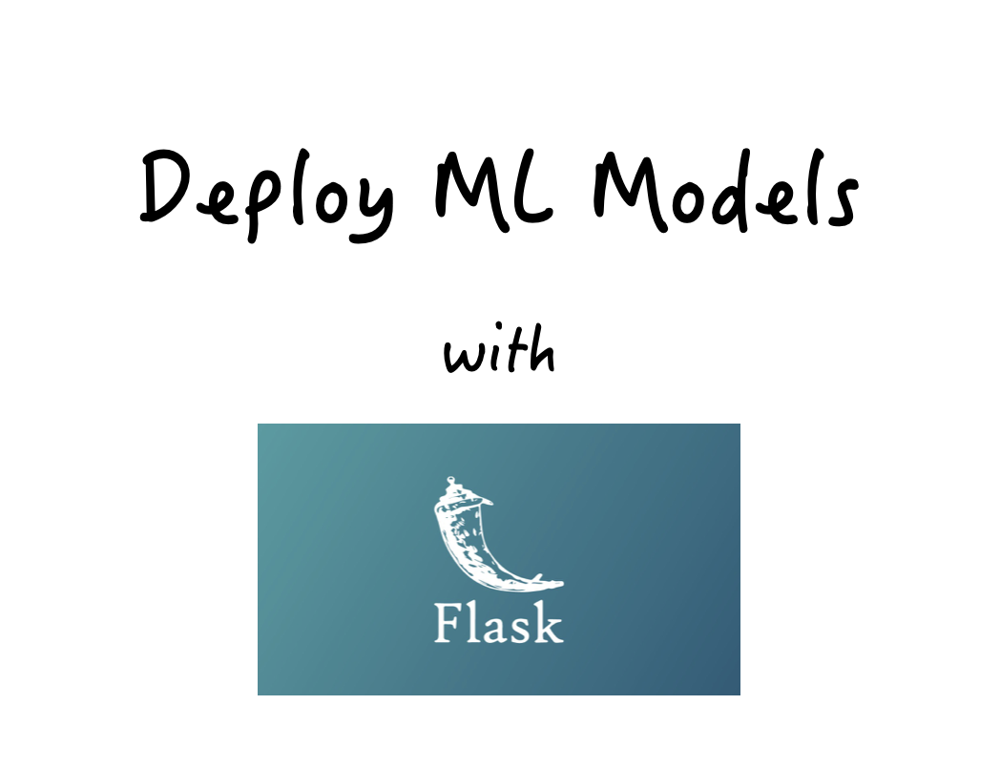

Deploy ML Models with Flask
As discussed in the previous project, Flask is another valuable API for deploying models. Let's delve into deployment with Flask!

From the code in the previous project, we can implement the same application with Flask as the code below,
import io
import cv2
import numpy as np
from flask import Flask, request, send_file, jsonify, Response
from werkzeug.utils import secure_filename
from enum import Enum
import cvlib as cv
# Initialize Flask application
app = Flask(__name__)
# List available models using Enum for convenience. This is useful when the options are pre-defined.
class Model(str, Enum):
yolov3tiny = "yolov3-tiny"
yolov3 = "yolov3"
# Home endpoint
@app.route("/")
def home():
return "Congratulations! Your API is working as expected"
# Prediction endpoint with image response
@app.route("/predict", methods=["POST"])
def predict():
model = request.form['model']
file = request.files['file']
# Validate file extension
filename = secure_filename(file.filename)
fileExtension = filename.split(".")[-1] in ("jpg", "jpeg", "png")
if not fileExtension:
return "Unsupported file provided.", 415
# Transform raw image into CV2 image
image_stream = io.BytesIO(file.read())
image_stream.seek(0)
file_bytes = np.asarray(bytearray(image_stream.read()), dtype=np.uint8)
image = cv2.imdecode(file_bytes, cv2.IMREAD_COLOR)
# Run object detection model
bbox, label, conf = cv.detect_common_objects(image, model=model)
# Draw bounding boxes on image
output_image = draw_bbox(image, bbox, label, conf)
cv2.imwrite(f'images_uploaded/{filename}', output_image)
# Return image file as response
return send_file(f'images_uploaded/{filename}', mimetype='image/jpeg')
# Prediction endpoint with JSON response
@app.route("/predict_json", methods=["POST"])
def predict_json():
model = request.form['model']
file = request.files['file']
# Validate file extension
filename = secure_filename(file.filename)
fileExtension = filename.split(".")[-1] in ("jpg", "jpeg", "png")
if not fileExtension:
return "Unsupported file provided.", 415
# Transform raw image into CV2 image
image_stream = io.BytesIO(file.read())
image_stream.seek(0)
file_bytes = np.asarray(bytearray(image_stream.read()), dtype=np.uint8)
image = cv2.imdecode(file_bytes, cv2.IMREAD_COLOR)
# Run object detection model
bbox, label, conf = cv.detect_common_objects(image, model=model)
# Prepare JSON response
detections = []
for i in range(len(bbox)):
detections.append({
"bbox": bbox[i],
"label": label[i],
"confidence": conf[i]
})
return jsonify({"detections": detections})
# Helper function to draw bounding boxes on images
def draw_bbox(image, bbox, label, conf):
for i in range(len(bbox)):
color = (0, 255, 0) # green color for bounding box
cv2.rectangle(image, bbox[i], color, 2)
text = f"{label[i]}: {conf[i]}"
cv2.putText(image, text, (bbox[i][0], bbox[i][1] - 10), cv2.FONT_HERSHEY_SIMPLEX, 0.5, color, 2)
return image
# Run the Flask app
if __name__ == "__main__":
app.run(host='127.0.0.1', port=8000, debug=True)Extra on FastAPI vs Flask!!
In the realm of Python web development, two frameworks stand out as popular choices for building APIs: FastAPI and Flask. While both offer powerful tools for creating web applications, they differ in their approach, features, and suitability for various use cases. FastAPI, known for its exceptional performance and asynchronous support, caters to applications requiring high scalability and real-time communication. On the other hand, Flask, with its simplicity and flexibility, appeals to developers seeking rapid prototyping and minimal configuration. In this comparison, we'll explore the key differences between FastAPI and Flask, along with real-life applications where each excels.
Performance and Speed:
FastAPI: FastAPI is designed for high performance and speed. It leverages asynchronous programming, making it ideal for handling heavy workloads and concurrent requests efficiently.
Flask: Flask is lightweight and flexible but lacks native support for asynchronous programming. While it's fast for smaller applications, it may struggle to handle large-scale applications or heavy traffic compared to FastAPI.
Type Annotations and Validation:
FastAPI: FastAPI uses Python type annotations for request and response handling, enabling automatic data validation and documentation generation through tools like Pydantic. This leads to more robust and self-documenting APIs.
Flask: Flask does not have built-in support for type annotations or data validation. Developers typically rely on external libraries like Marshmallow for request validation and documentation.
Documentation:
FastAPI: FastAPI automatically generates interactive API documentation using OpenAPI and Swagger UI. This documentation is comprehensive, providing information about request and response formats, query parameters, and more.
Flask: Flask does not provide built-in support for generating API documentation. Documentation needs to be written manually or generated using third-party tools like Flask-RESTPlus.
Ease of Use:
FastAPI: FastAPI comes with features like automatic dependency injection, automatic data validation, and integrated WebSocket support, which streamline development and make it easy to build complex APIs.
Flask: Flask is known for its simplicity and ease of use, making it a popular choice for small to medium-sized applications. However, developers may need to rely on external libraries for additional features like data validation and documentation.
Community and Ecosystem:
FastAPI: FastAPI is relatively newer compared to Flask but has gained significant popularity due to its performance and modern features. It has an active and growing community, with many plugins and extensions available.
Flask: Flask has been around for longer and has a mature ecosystem with a wide range of extensions and plugins for various functionalities. It has a large community and extensive documentation, making it easy to find solutions to common problems.
Real-Life Applications:
FastAPI: FastAPI's performance, asynchronous support, and automatic documentation generation make it an excellent choice for building APIs that require high scalability and real-time communication. Real-life applications where FastAPI shines include:
Real-time Data Streaming: FastAPI's asynchronous support makes it well-suited for handling real-time data streaming applications, such as chat applications, live tracking systems, or financial trading platforms.
Microservices Architecture: FastAPI's lightweight and high-performance nature make it ideal for building microservices that need to handle a large number of concurrent requests efficiently.
Machine Learning Model Deployment: FastAPI's integration with Pydantic for data validation and OpenAPI for automatic documentation generation makes it an excellent choice for deploying machine learning models as APIs. This is particularly useful for applications like recommendation systems, image recognition APIs, or natural language processing services.
Flask: Flask's simplicity, flexibility, and large ecosystem of extensions make it suitable for a wide range of applications, particularly those where rapid prototyping or minimal configuration is required. Real-life applications where Flask excels include:
Web Applications: Flask's lightweight nature and ease of use make it a popular choice for building web applications, particularly for startups or small businesses looking to develop prototypes or MVPs (Minimum Viable Products) quickly.
Content Management Systems (CMS): Flask's flexibility allows developers to tailor CMS solutions to specific requirements, making it suitable for building custom content management systems for blogs, forums, or small-scale e-commerce sites.
RESTful APIs: Flask's simplicity and extensibility make it a solid choice for building RESTful APIs for applications like mobile app backends, IoT (Internet of Things) devices, or internal services within organizations.
When deciding between FastAPI and Flask for a real-life application, consider factors such as performance requirements, scalability, development speed, and the specific needs of your project. FastAPI is often preferred for applications requiring high performance, real-time communication, or machine learning model deployment, while Flask is favored for its simplicity, flexibility, and ease of use, making it suitable for a wide range of web development projects.
In summary, FastAPI is a modern web framework known for its high performance, built-in support for asynchronous programming, and automatic data validation and documentation. Flask, on the other hand, is lightweight, flexible, and easy to use, making it suitable for smaller projects or applications where simplicity is key. The choice between FastAPI and Flask depends on the specific requirements and preferences of the project.